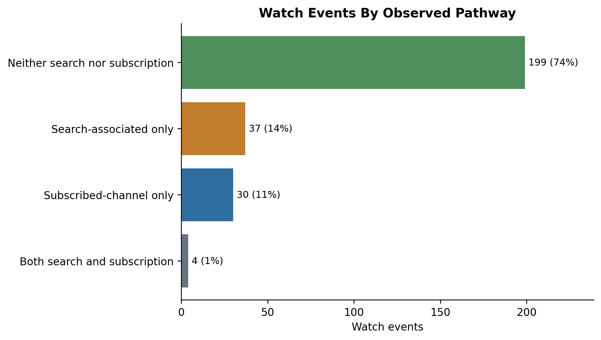
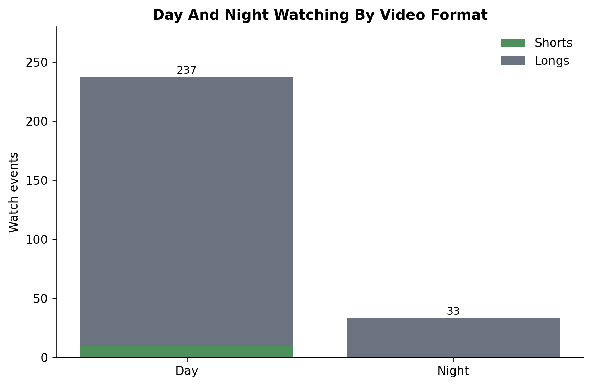

from pathlib import Path
import matplotlib.pyplot as plt
import pandas as pd
pd.set_option("display.max_columns", 120)
pd.set_option("display.max_colwidth", 90)
plt.rcParams.update({
"figure.dpi": 120,
"savefig.dpi": 180,
"axes.spines.top": False,
"axes.spines.right": False,
"axes.titleweight": "bold",
})05 Demonstrate Enriched YouTube Exposure Measures
This notebook shows what becomes possible once donated YouTube watch histories have been cleaned, linked to scraped platform metadata, and annotated with event-level indicators.
The goal is demonstration rather than new measurement. We use the enriched watch-event table from notebook 04 to show how one watch event can now carry donation fields, metadata fields, pathway indicators, format labels, day/night labels, and problematic-view labels side by side. Then we create a few compact figures that mirror the kinds of claims discussed in the article manuscript.
The notebook reads:
outputs/tables/video_histories_enriched.csvoutputs/tables/exposure_linkage_report.csvwhen available
It writes:
outputs/tables/demo_enriched_event_examples.csvoutputs/tables/demo_measure_summary.csvoutputs/figures/demo_pathway_mix.pngoutputs/figures/demo_participant_measure_shares.pngoutputs/figures/demo_daynight_shorts.pngoutputs/figures/demo_problematic_views.png
Locate Project Files
The notebook can be run from the project root or from inside the scripts folder. All printed paths are project-relative so rendered output does not expose private local folders.
def find_project_root(start=None):
start = Path.cwd() if start is None else Path(start)
for candidate in [start, *start.parents]:
has_quarto_project = (candidate / "_quarto.yml").exists()
has_enriched_table = (candidate / "outputs" / "tables" / "video_histories_enriched.csv").exists()
if has_quarto_project and has_enriched_table:
return candidate
raise FileNotFoundError(
"Could not find the Quarto project root. Run this notebook from "
"inside youtube_donation_dsa_method after notebook 04 has created the enriched table."
)
PROJECT_ROOT = find_project_root()
OUTPUT_DIR = PROJECT_ROOT / "outputs" / "tables"
FIGURE_DIR = PROJECT_ROOT / "outputs" / "figures"
ENRICHED_VIDEO_HISTORIES_PATH = OUTPUT_DIR / "video_histories_enriched.csv"
EXPOSURE_LINKAGE_REPORT_PATH = OUTPUT_DIR / "exposure_linkage_report.csv"
DEMO_EVENT_EXAMPLES_PATH = OUTPUT_DIR / "demo_enriched_event_examples.csv"
DEMO_MEASURE_SUMMARY_PATH = OUTPUT_DIR / "demo_measure_summary.csv"
FIGURE_PATHS = {
"pathway_mix": FIGURE_DIR / "demo_pathway_mix.png",
"participant_measure_shares": FIGURE_DIR / "demo_participant_measure_shares.png",
"daynight_shorts": FIGURE_DIR / "demo_daynight_shorts.png",
"problematic_views": FIGURE_DIR / "demo_problematic_views.png",
}
print(f"Project folder: {PROJECT_ROOT.name}")
print(f"Enriched input: {ENRICHED_VIDEO_HISTORIES_PATH.relative_to(PROJECT_ROOT).as_posix()}")
print(f"Figure folder: {FIGURE_DIR.relative_to(PROJECT_ROOT).as_posix()}")Project folder: youtube-donation-dsa-method-public
Enriched input: outputs/tables/video_histories_enriched.csv
Figure folder: outputs/figuresLoad The Enriched Event Table
The input table is event-level: each row is one watch event. The columns added by notebook 04 are treated as the source of truth here. This notebook reshapes them for display and plotting, but it does not create new classifications.
def ensure_columns(dataframe, required_columns, label):
missing_columns = sorted(set(required_columns) - set(dataframe.columns))
if missing_columns:
raise ValueError(
f"Missing columns in {label}: {missing_columns}. "
f"Found: {list(dataframe.columns)}"
)
def to_nullable_bool(series):
normalized = series.astype("string").str.strip().str.lower()
mapped = normalized.map(
{
"true": True,
"false": False,
"1": True,
"0": False,
"yes": True,
"no": False,
}
)
return mapped.astype("boolean")
video_histories_enriched = pd.read_csv(ENRICHED_VIDEO_HISTORIES_PATH, low_memory=False)
required_columns = {
"Participant ID",
"time",
"watch_local_time",
"video_id",
"clean_title",
"url",
"metadata_title",
"metadata_channel",
"duration_seconds",
"view_count",
"metadata_status",
"searched_for",
"subscribed",
"is_short",
"time_of_day",
"generalized_error_msg",
"problematic_category",
"problematic_assessment_label",
"is_problematic",
}
ensure_columns(video_histories_enriched, required_columns, "video_histories_enriched.csv")
row_count = len(video_histories_enriched)
video_histories_enriched["time"] = pd.to_datetime(
video_histories_enriched["time"],
utc=True,
format="mixed",
errors="coerce",
)
video_histories_enriched["watch_local_time"] = pd.to_datetime(
video_histories_enriched["watch_local_time"],
format="mixed",
errors="coerce",
)
for boolean_column in ["searched_for", "subscribed", "is_short", "is_problematic"]:
video_histories_enriched[boolean_column] = to_nullable_bool(video_histories_enriched[boolean_column])
if video_histories_enriched["time"].isna().any():
raise ValueError("Some rows have invalid UTC watch times.")
if len(video_histories_enriched) != row_count:
raise AssertionError("Loading changed the number of enriched watch events.")
input_summary = pd.DataFrame(
{
"measure": [
"watch_events",
"participants",
"unique_videos",
"earliest_watch_utc",
"latest_watch_utc",
],
"value": [
row_count,
video_histories_enriched["Participant ID"].nunique(),
video_histories_enriched["video_id"].nunique(),
video_histories_enriched["time"].min().isoformat(),
video_histories_enriched["time"].max().isoformat(),
],
}
)
input_summary| measure | value | |
|---|---|---|
| 0 | watch_events | 270 |
| 1 | participants | 3 |
| 2 | unique_videos | 255 |
| 3 | earliest_watch_utc | 2015-03-30T13:56:42.847000+00:00 |
| 4 | latest_watch_utc | 2025-04-01T20:43:25.151000+00:00 |
Prepare Reader-Friendly Labels
The columns below are display helpers for the showcase and figures. They keep the underlying event flags unchanged, but make the notebook easier to read.
def shorten_text(value, max_chars=72):
if pd.isna(value):
return pd.NA
text = " ".join(str(value).split())
if len(text) <= max_chars:
return text
return text[: max_chars - 3].rstrip() + "..."
def status_label(value):
if pd.isna(value):
return "Unknown"
if value is pd.NA:
return "Unknown"
return "Yes" if bool(value) else "No"
def subscribed_label(value):
if pd.isna(value):
return "Unknown"
return "Yes" if bool(value) else "No"
def format_number(value):
if pd.isna(value):
return pd.NA
return f"{int(value):,}"
analysis_events = video_histories_enriched.copy()
analysis_events["searched_confirmed"] = analysis_events["searched_for"].eq(True)
analysis_events["subscribed_confirmed"] = analysis_events["subscribed"].eq(True)
analysis_events["short_confirmed"] = analysis_events["is_short"].eq(True)
analysis_events["problematic_confirmed"] = analysis_events["is_problematic"].eq(True)
analysis_events["night_confirmed"] = analysis_events["time_of_day"].astype("string").str.lower().eq("night")
analysis_events["video_format"] = "Longs"
analysis_events.loc[analysis_events["short_confirmed"], "video_format"] = "Shorts"
analysis_events["time_period"] = analysis_events["time_of_day"].astype("string").str.title()
analysis_events["pathway"] = "Neither search nor subscription"
analysis_events.loc[
analysis_events["searched_confirmed"] & ~analysis_events["subscribed_confirmed"],
"pathway",
] = "Search-associated only"
analysis_events.loc[
~analysis_events["searched_confirmed"] & analysis_events["subscribed_confirmed"],
"pathway",
] = "Subscribed-channel only"
analysis_events.loc[
analysis_events["searched_confirmed"] & analysis_events["subscribed_confirmed"],
"pathway",
] = "Both search and subscription"
analysis_events["clean_title_short"] = analysis_events["clean_title"].map(shorten_text)
analysis_events["metadata_title_short"] = analysis_events["metadata_title"].map(shorten_text)
analysis_events["generalized_error_msg_short"] = analysis_events["generalized_error_msg"].map(shorten_text)
analysis_events["duration_minutes"] = (pd.to_numeric(analysis_events["duration_seconds"], errors="coerce") / 60).round(1)
analysis_events["view_count_display"] = pd.to_numeric(analysis_events["view_count"], errors="coerce").map(format_number)
analysis_events[["pathway", "video_format", "time_period"]].head()| pathway | video_format | time_period | |
|---|---|---|---|
| 0 | Subscribed-channel only | Longs | Day |
| 1 | Both search and subscription | Longs | Day |
| 2 | Subscribed-channel only | Longs | Day |
| 3 | Subscribed-channel only | Longs | Day |
| 4 | Subscribed-channel only | Longs | Day |
What The Enriched Data Now Makes Visible
The table below is a small set of illustrative watch events. It is meant to show the shape of the enriched data before we aggregate anything: a donated watch event can now be read together with scraped metadata, pathway context, format labels, day/night timing, and problematic-view signals.
The participant names are safe here because the data are mock data. In a real donation study, this section should be pseudonymized, aggregated, or suppressed if small cells could reveal sensitive viewing behavior.
example_specs = [
("Search-associated watch", analysis_events["searched_confirmed"]),
("Subscribed-channel watch", analysis_events["subscribed_confirmed"]),
("Shorts watch", analysis_events["short_confirmed"]),
("Nighttime watch", analysis_events["night_confirmed"]),
("Problematic/unavailable signal", analysis_events["problematic_confirmed"]),
(
"Neither search nor subscription",
analysis_events["pathway"].eq("Neither search nor subscription")
& ~analysis_events["problematic_confirmed"],
),
]
selected_rows = []
used_indices = set()
for reason, mask in example_specs:
candidates = analysis_events[mask].copy()
if candidates.empty:
continue
unused_candidates = candidates.loc[~candidates.index.isin(used_indices)]
chosen = unused_candidates.head(1) if not unused_candidates.empty else candidates.head(1)
chosen = chosen.copy()
chosen["showcase_reason"] = reason
selected_rows.append(chosen)
used_indices.add(chosen.index[0])
if not selected_rows:
raise ValueError("No showcase rows could be selected from the enriched table.")
showcase_columns = [
"showcase_reason",
"Participant ID",
"watch_local_time",
"clean_title_short",
"url",
"metadata_title_short",
"metadata_channel",
"duration_minutes",
"view_count_display",
"searched_for",
"subscribed",
"video_format",
"time_period",
"metadata_status",
"generalized_error_msg_short",
"problematic_assessment_label",
]
demo_enriched_event_examples = pd.concat(selected_rows, ignore_index=True)[showcase_columns].rename(
columns={
"Participant ID": "participant_id",
"watch_local_time": "watch_local_time",
"clean_title_short": "clean_title",
"metadata_title_short": "metadata_title",
"metadata_channel": "channel",
"duration_minutes": "duration_minutes",
"view_count_display": "view_count",
"searched_for": "searched",
"subscribed": "subscribed",
"generalized_error_msg_short": "generalized_error_msg",
}
)
demo_enriched_event_examples["searched"] = demo_enriched_event_examples["searched"].map(status_label)
demo_enriched_event_examples["subscribed"] = demo_enriched_event_examples["subscribed"].map(subscribed_label)
demo_enriched_event_examples["watch_local_time"] = demo_enriched_event_examples["watch_local_time"].astype("string")
demo_enriched_event_examples| showcase_reason | participant_id | watch_local_time | clean_title | url | metadata_title | channel | duration_minutes | view_count | searched | subscribed | video_format | time_period | metadata_status | generalized_error_msg | problematic_assessment_label | |
|---|---|---|---|---|---|---|---|---|---|---|---|---|---|---|---|---|
| 0 | Search-associated watch | Alma | 2025-03-13 14:53:45.738000+01:00 | Demo video 213 | https://www.youtube.com/watch?v=VID00000213 | Demo video 213 | Demo channel 067 | 50.1 | 213,248 | Yes | Yes | Longs | Day | ok | No error | No error |
| 1 | Subscribed-channel watch | Alma | 2025-03-24 08:32:25.697000+01:00 | Demo video 072 | https://www.youtube.com/watch?v=VID00000072 | Demo video 072 | Demo channel 051 | 39.2 | 71,338 | No | Yes | Longs | Day | ok | No error | No error |
| 2 | Shorts watch | Alma | 2024-10-30 22:54:50.417000+01:00 | Demo video 018 | https://www.youtube.com/watch?v=VID00000018 | Demo video 018 | Demo channel 023 | 0.8 | 21,978 | No | Yes | Shorts | Day | ok | No error | No error |
| 3 | Nighttime watch | Alma | 2019-01-26 03:20:46.805000+01:00 | Demo video 151 | https://www.youtube.com/watch?v=VID00000151 | Demo video 151 | Demo channel 020 | 20.5 | 154,016 | No | No | Longs | Night | ok | No error | No error |
| 4 | Problematic/unavailable signal | Alma | 2022-06-03 11:43:18.227000+02:00 | Demo video 014 | https://www.youtube.com/watch?v=VID00000014 | <NA> | NaN | NaN | NaN | No | Unknown | Longs | Day | error | This video has been removed for violating YouTube's Community Guidelines | Problematic |
| 5 | Neither search nor subscription | Alma | 2024-08-15 16:00:23.414000+02:00 | Demo video 191 | https://www.youtube.com/watch?v=VID00000191 | Demo video 191 | Demo channel 109 | 40.2 | 193,504 | No | No | Longs | Day | ok | No error | No error |
Build Compact Summary Tables
These tables turn the event-level columns into aggregate measures. The goal is to make the denominator visible: the shares below are shares of watch events in the enriched table.
watch_events = len(analysis_events)
def event_count_share(label, count):
return {
"section": "whole_dataset",
"measure": label,
"value": int(count),
"share_of_watch_events": count / watch_events if watch_events else pd.NA,
}
demo_measure_summary = pd.DataFrame(
[
{"section": "whole_dataset", "measure": "watch_events", "value": watch_events, "share_of_watch_events": pd.NA},
{"section": "whole_dataset", "measure": "participants", "value": analysis_events["Participant ID"].nunique(), "share_of_watch_events": pd.NA},
{"section": "whole_dataset", "measure": "unique_videos", "value": analysis_events["video_id"].nunique(), "share_of_watch_events": pd.NA},
event_count_share("searched_watch_events", analysis_events["searched_confirmed"].sum()),
event_count_share("confirmed_subscribed_watch_events", analysis_events["subscribed_confirmed"].sum()),
event_count_share("shorts_watch_events", analysis_events["short_confirmed"].sum()),
event_count_share("nighttime_watch_events", analysis_events["night_confirmed"].sum()),
event_count_share("problematic_watch_events", analysis_events["problematic_confirmed"].sum()),
]
)
participant_summary = (
analysis_events.groupby("Participant ID", dropna=False)
.agg(
watch_events=("video_id", "size"),
searched_events=("searched_confirmed", "sum"),
subscribed_events=("subscribed_confirmed", "sum"),
shorts_events=("short_confirmed", "sum"),
nighttime_events=("night_confirmed", "sum"),
problematic_events=("problematic_confirmed", "sum"),
)
.reset_index()
.rename(columns={"Participant ID": "participant_id"})
)
for count_column, share_column in [
("searched_events", "searched_share"),
("subscribed_events", "subscribed_share"),
("shorts_events", "shorts_share"),
("nighttime_events", "nighttime_share"),
("problematic_events", "problematic_share"),
]:
participant_summary[share_column] = participant_summary[count_column] / participant_summary["watch_events"]
pathway_order = [
"Neither search nor subscription",
"Search-associated only",
"Subscribed-channel only",
"Both search and subscription",
]
pathway_summary = (
analysis_events["pathway"]
.value_counts()
.reindex(pathway_order, fill_value=0)
.rename_axis("pathway")
.reset_index(name="watch_events")
)
pathway_summary["share_of_watch_events"] = pathway_summary["watch_events"] / watch_events
format_order = ["Shorts", "Longs"]
time_order = ["Day", "Night"]
daynight_format_summary = pd.crosstab(
analysis_events["time_period"],
analysis_events["video_format"],
).reindex(index=time_order, columns=format_order, fill_value=0)
problematic_assessment_summary = (
analysis_events["problematic_assessment_label"]
.value_counts(dropna=False)
.rename_axis("problematic_assessment_label")
.reset_index(name="watch_events")
)
problematic_assessment_summary["share_of_watch_events"] = problematic_assessment_summary["watch_events"] / watch_events
problematic_category_summary = (
analysis_events["problematic_category"]
.value_counts(dropna=False)
.rename_axis("problematic_category")
.reset_index(name="watch_events")
)
problematic_category_summary["share_of_watch_events"] = problematic_category_summary["watch_events"] / watch_events
share_columns = [column for column in participant_summary.columns if column.endswith("_share")]
if not participant_summary[share_columns].map(lambda value: 0 <= value <= 1).all().all():
raise AssertionError("Participant-level shares should be between 0 and 1.")
if len(analysis_events) != row_count:
raise AssertionError("Summary construction changed the enriched input row count.")
demo_measure_summary| section | measure | value | share_of_watch_events | |
|---|---|---|---|---|
| 0 | whole_dataset | watch_events | 270 | <NA> |
| 1 | whole_dataset | participants | 3 | <NA> |
| 2 | whole_dataset | unique_videos | 255 | <NA> |
| 3 | whole_dataset | searched_watch_events | 60 | 0.222222 |
| 4 | whole_dataset | confirmed_subscribed_watch_events | 34 | 0.125926 |
| 5 | whole_dataset | shorts_watch_events | 10 | 0.037037 |
| 6 | whole_dataset | nighttime_watch_events | 33 | 0.122222 |
| 7 | whole_dataset | problematic_watch_events | 10 | 0.037037 |
Figure 1: Pathway Mix
This figure illustrates the manuscript’s pathway question: how much watched content appears to be associated with search, with subscribed channels, with both, or with neither observed route? The categories are indicators, not causal explanations of how YouTube produced the view.
FIGURE_DIR.mkdir(parents=True, exist_ok=True)
plot_data = pathway_summary.sort_values("watch_events", ascending=True)
fig, ax = plt.subplots(figsize=(8, 4.6))
colors = ["#6b7280", "#2f6f9f", "#c17c2c", "#4f8f5b"]
ax.barh(plot_data["pathway"], plot_data["watch_events"], color=colors[: len(plot_data)])
ax.set_title("Watch Events By Observed Pathway")
ax.set_xlabel("Watch events")
ax.set_ylabel("")
for index, row in plot_data.reset_index(drop=True).iterrows():
ax.text(
row["watch_events"] + 2,
index,
f"{row['watch_events']} ({row['share_of_watch_events']:.0%})",
va="center",
fontsize=9,
)
ax.set_xlim(0, max(plot_data["watch_events"]) * 1.2)
fig.tight_layout()
fig.savefig(FIGURE_PATHS["pathway_mix"], bbox_inches="tight")
plt.show()
pathway_summary
| pathway | watch_events | share_of_watch_events | |
|---|---|---|---|
| 0 | Neither search nor subscription | 199 | 0.737037 |
| 1 | Search-associated only | 37 | 0.137037 |
| 2 | Subscribed-channel only | 30 | 0.111111 |
| 3 | Both search and subscription | 4 | 0.014815 |
Figure 3: Day/Night And Shorts/Longs
This figure combines the locally interpreted watch time with metadata-derived video format. It shows how routine-oriented questions can be crossed with content-format indicators once timestamps and metadata sit in the same event table.
fig, ax = plt.subplots(figsize=(7, 4.6))
bottom_values = [0] * len(daynight_format_summary)
format_colors = {"Shorts": "#4f8f5b", "Longs": "#6b7280"}
for format_label in format_order:
values = daynight_format_summary[format_label].tolist()
ax.bar(
daynight_format_summary.index,
values,
bottom=bottom_values,
label=format_label,
color=format_colors[format_label],
)
bottom_values = [bottom + value for bottom, value in zip(bottom_values, values)]
ax.set_title("Day And Night Watching By Video Format")
ax.set_ylabel("Watch events")
ax.set_xlabel("")
ax.legend(frameon=False)
for index, total in enumerate(bottom_values):
ax.text(index, total + 3, str(total), ha="center", fontsize=9)
ax.set_ylim(0, max(bottom_values) * 1.18)
fig.tight_layout()
fig.savefig(FIGURE_PATHS["daynight_shorts"], bbox_inches="tight")
plt.show()
daynight_format_summary
| video_format | Shorts | Longs |
|---|---|---|
| time_period | ||
| Day | 10 | 227 |
| Night | 0 | 33 |
Save Demo Outputs
The CSV outputs keep the compact showcase table and whole-dataset summary. The figures are saved as standalone PNG files so they can be used in the manuscript, slides, or a rendered Quarto document.
OUTPUT_DIR.mkdir(parents=True, exist_ok=True)
FIGURE_DIR.mkdir(parents=True, exist_ok=True)
demo_enriched_event_examples.to_csv(DEMO_EVENT_EXAMPLES_PATH, index=False)
demo_measure_summary.to_csv(DEMO_MEASURE_SUMMARY_PATH, index=False)
for path in [DEMO_EVENT_EXAMPLES_PATH, DEMO_MEASURE_SUMMARY_PATH, *FIGURE_PATHS.values()]:
if not path.exists():
raise AssertionError(f"Expected output was not created: {path.name}")
saved_outputs = pd.DataFrame(
{
"output": [
DEMO_EVENT_EXAMPLES_PATH.relative_to(PROJECT_ROOT).as_posix(),
DEMO_MEASURE_SUMMARY_PATH.relative_to(PROJECT_ROOT).as_posix(),
*[path.relative_to(PROJECT_ROOT).as_posix() for path in FIGURE_PATHS.values()],
]
}
)
saved_outputs| output | |
|---|---|
| 0 | outputs/tables/demo_enriched_event_examples.csv |
| 1 | outputs/tables/demo_measure_summary.csv |
| 2 | outputs/figures/demo_pathway_mix.png |
| 3 | outputs/figures/demo_participant_measure_shares.png |
| 4 | outputs/figures/demo_daynight_shorts.png |
| 5 | outputs/figures/demo_problematic_views.png |
Result
The notebook stores a compact showcase table, a whole-dataset summary table, and four figures. The previews below are the main handoff for the article-facing demonstration.
print("demo_enriched_event_examples.csv")
display(demo_enriched_event_examples.head(10))
print("demo_measure_summary.csv")
display(demo_measure_summary.head(10))
print("Participant summary")
display(participant_summary)
print("Pathway summary")
display(pathway_summary)
print("Problematic assessment summary")
display(problematic_assessment_summary)
print("Saved outputs")
for path in [DEMO_EVENT_EXAMPLES_PATH, DEMO_MEASURE_SUMMARY_PATH, *FIGURE_PATHS.values()]:
print(path.relative_to(PROJECT_ROOT).as_posix())demo_enriched_event_examples.csv| showcase_reason | participant_id | watch_local_time | clean_title | url | metadata_title | channel | duration_minutes | view_count | searched | subscribed | video_format | time_period | metadata_status | generalized_error_msg | problematic_assessment_label | |
|---|---|---|---|---|---|---|---|---|---|---|---|---|---|---|---|---|
| 0 | Search-associated watch | Alma | 2025-03-13 14:53:45.738000+01:00 | Demo video 213 | https://www.youtube.com/watch?v=VID00000213 | Demo video 213 | Demo channel 067 | 50.1 | 213,248 | Yes | Yes | Longs | Day | ok | No error | No error |
| 1 | Subscribed-channel watch | Alma | 2025-03-24 08:32:25.697000+01:00 | Demo video 072 | https://www.youtube.com/watch?v=VID00000072 | Demo video 072 | Demo channel 051 | 39.2 | 71,338 | No | Yes | Longs | Day | ok | No error | No error |
| 2 | Shorts watch | Alma | 2024-10-30 22:54:50.417000+01:00 | Demo video 018 | https://www.youtube.com/watch?v=VID00000018 | Demo video 018 | Demo channel 023 | 0.8 | 21,978 | No | Yes | Shorts | Day | ok | No error | No error |
| 3 | Nighttime watch | Alma | 2019-01-26 03:20:46.805000+01:00 | Demo video 151 | https://www.youtube.com/watch?v=VID00000151 | Demo video 151 | Demo channel 020 | 20.5 | 154,016 | No | No | Longs | Night | ok | No error | No error |
| 4 | Problematic/unavailable signal | Alma | 2022-06-03 11:43:18.227000+02:00 | Demo video 014 | https://www.youtube.com/watch?v=VID00000014 | <NA> | NaN | NaN | NaN | No | Unknown | Longs | Day | error | This video has been removed for violating YouTube's Community Guidelines | Problematic |
| 5 | Neither search nor subscription | Alma | 2024-08-15 16:00:23.414000+02:00 | Demo video 191 | https://www.youtube.com/watch?v=VID00000191 | Demo video 191 | Demo channel 109 | 40.2 | 193,504 | No | No | Longs | Day | ok | No error | No error |
demo_measure_summary.csv| section | measure | value | share_of_watch_events | |
|---|---|---|---|---|
| 0 | whole_dataset | watch_events | 270 | <NA> |
| 1 | whole_dataset | participants | 3 | <NA> |
| 2 | whole_dataset | unique_videos | 255 | <NA> |
| 3 | whole_dataset | searched_watch_events | 60 | 0.222222 |
| 4 | whole_dataset | confirmed_subscribed_watch_events | 34 | 0.125926 |
| 5 | whole_dataset | shorts_watch_events | 10 | 0.037037 |
| 6 | whole_dataset | nighttime_watch_events | 33 | 0.122222 |
| 7 | whole_dataset | problematic_watch_events | 10 | 0.037037 |
Participant summary| participant_id | watch_events | searched_events | subscribed_events | shorts_events | nighttime_events | problematic_events | searched_share | subscribed_share | shorts_share | nighttime_share | problematic_share | |
|---|---|---|---|---|---|---|---|---|---|---|---|---|
| 0 | Alma | 90 | 20 | 14 | 4 | 9 | 5 | 0.222222 | 0.155556 | 0.044444 | 0.1 | 0.055556 |
| 1 | Beata | 90 | 20 | 9 | 5 | 12 | 3 | 0.222222 | 0.1 | 0.055556 | 0.133333 | 0.033333 |
| 2 | Carmen | 90 | 20 | 11 | 1 | 12 | 2 | 0.222222 | 0.122222 | 0.011111 | 0.133333 | 0.022222 |
Pathway summary| pathway | watch_events | share_of_watch_events | |
|---|---|---|---|
| 0 | Neither search nor subscription | 199 | 0.737037 |
| 1 | Search-associated only | 37 | 0.137037 |
| 2 | Subscribed-channel only | 30 | 0.111111 |
| 3 | Both search and subscription | 4 | 0.014815 |
Problematic assessment summary| problematic_assessment_label | watch_events | share_of_watch_events | |
|---|---|---|---|
| 0 | No error | 213 | 0.788889 |
| 1 | Not problematic | 41 | 0.151852 |
| 2 | Problematic | 10 | 0.037037 |
| 3 | Removed due to external legal rights | 6 | 0.022222 |
Saved outputs
outputs/tables/demo_enriched_event_examples.csv
outputs/tables/demo_measure_summary.csv
outputs/figures/demo_pathway_mix.png
outputs/figures/demo_participant_measure_shares.png
outputs/figures/demo_daynight_shorts.png
outputs/figures/demo_problematic_views.png